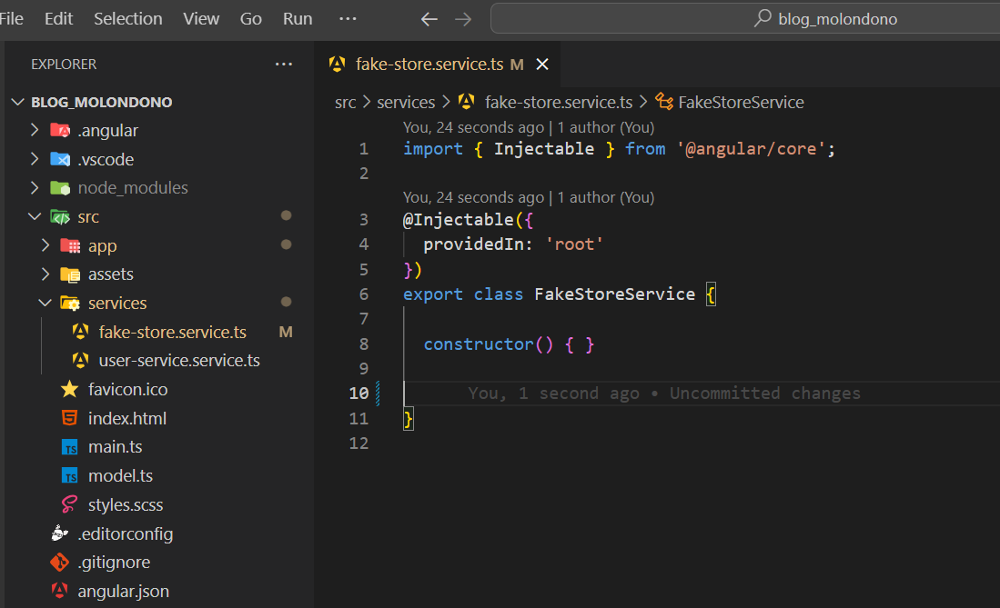
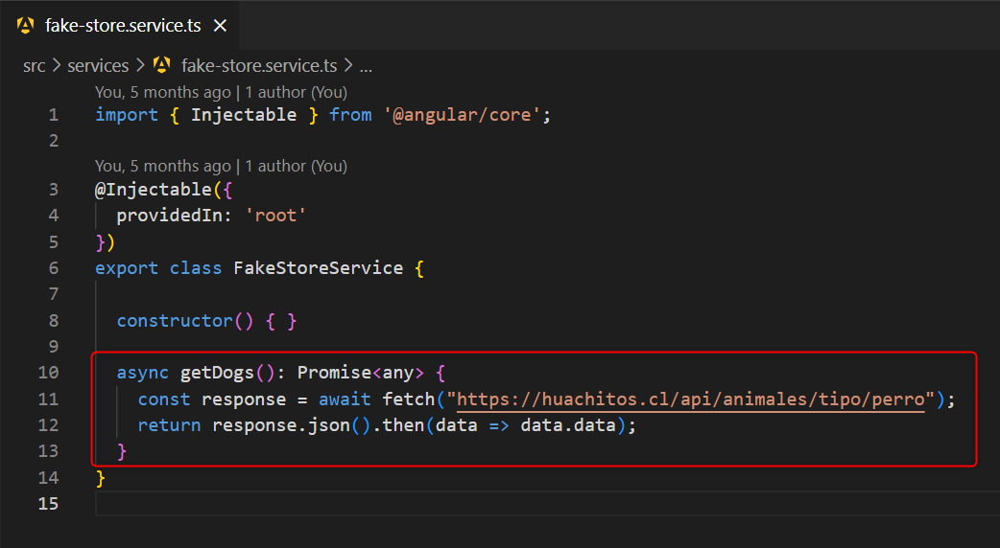
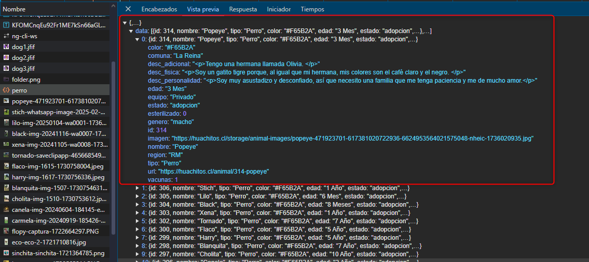
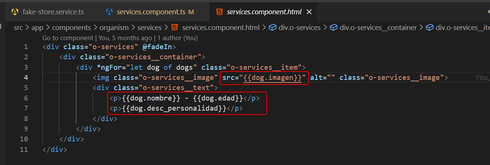
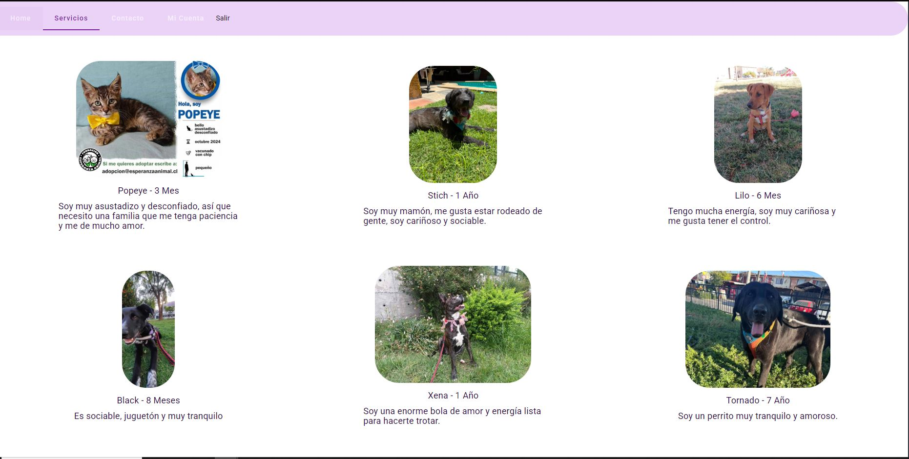

En aplicaciones web, los métodos GET y POST son los más usados para comunicarte con un servidor. Se utilizan para intercambiar datos entre el cliente (tu navegador) y el servidor (una API o backend).
Una API (Interfaz de Programación de Aplicaciones) permite que dos sistemas diferentes se comuniquen. Funciona como un puente entre tu aplicación frontend y un servidor, permitiendo el intercambio de datos sin necesidad de conocer cómo está construido el otro sistema.
Vamos a consumir una API pública llamada huachitos.cl, que nos entrega información sobre perritos 🐶
como su nombre, edad, personalidad e imagen.
Primero, creamos un servicio Angular dentro de la carpeta services. Puedes generarlo con el siguiente
comando:
ng generate service fake-storeTu estructura del proyecto debería lucir así en este punto:

Según la documentación de la API, la URL que vamos a consumir es:
https://huachitos.cl/api/animales/tipo/perro
En el servicio que acabamos de crear, añadimos una función que será la encargada de obtener los datos desde esa URL:

Ahora, llamamos a ese servicio desde un componente, por ejemplo uno llamado service-component, que
simula una página de adopción de mascotas.
Como puedes ver, el servicio se inyecta en el constructor y se utiliza dentro del método ngOnInit()
para cargar los datos automáticamente al iniciar el componente.
Si inspeccionamos la respuesta de la API, veremos la estructura del JSON que recibimos:
Con esta estructura clara, ya podemos usar los datos para mostrarlos en pantalla.
El resultado final podría verse así:
